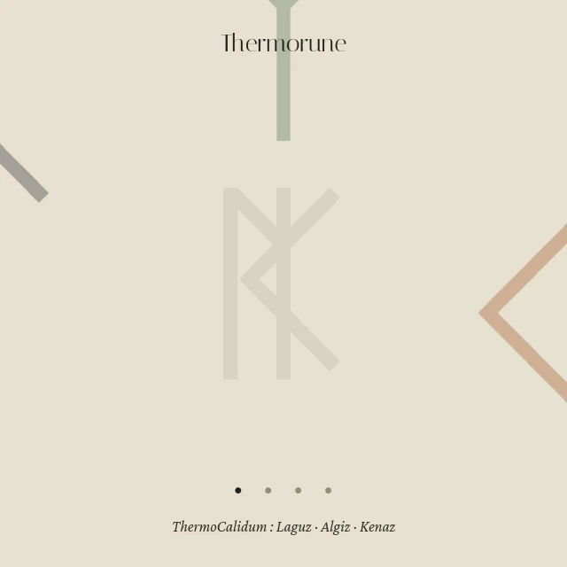

Thermorune
Un sous-verre runique à deux faces : un disque de métal serti dans un anneau d’acajou. Le disque, conducteur, porte la chaleur ou la fraîcheur de la rune jusqu’au récipient posé dessus ; l’anneau de bois isole et protège la main comme la table. Seule la face au contact du récipient agit, l’autre reste inerte.
Les deux bindrunes partagent un même noyau : Laguz porte le liquide, Algiz protège de l’excès. Sur la face ThermoCalidum, Kenaz appelle le feu et la boisson garde sa chaleur ; sur la face ThermoFrigus, Isa appelle la glace et la boisson reste fraîche.
Fiches


Animation
